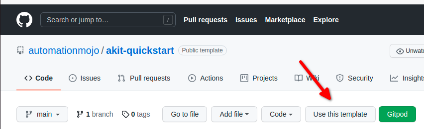
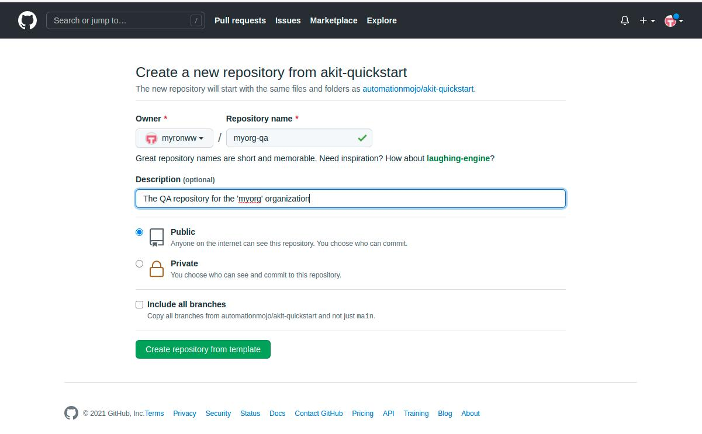

Repository Branding
The Automation Kit QuickStart repository written to help organizations get automation efforts off the ground and headed in the right direction quickly.
Getting an enterprise grade automation project off the ground that is capable of scaling to meet the needs of large and diverse software projects can take a significant amount time and effort. Learning how to setup a really effective enterprise class automation project that scales to meet the needs of a large software projects takes alot of trial and error and most likely lots of refactoring as you learn more about the unexpected challenges that complexed automation projects can throw at you.
Note
If you are not refactoring at regular intervals when red flags start popping up that indicate you should, then you will end of in a position where the refactoring effort is no longer viable or the effort is massive and very hard. Its ok if you didn’t get it perfect the first time, take the time to fix the moderately sized issues before they become major or unfixable issues.
Luckily, I have already learned alot of those lessons while building distributed automation frameworks for a very large and complex software project. The many years and long hours analyzing problems and writing code are one of the reasons I set out to write the AutomationKit framework. To have a set of tools that any organization can utilize to get headed in the right direction with distributed automation projects.
To make it easy to get started, I created this github Template project. This template project makes it super easy to get started using the Automation Kit for real world automation projects. This repository sets up the layed out of the code and establishes foundation patterns in order to setup a foundation that can support scaling. This repository avoids alot of pitfalls that show up a couple years into automation projects and hopefully will help you achieve significant scale without needing to do a major refactor when its time to get to that next level.
In order to brand this repository for your software project and organization, follow these simple steps.
Create your Repository
Because the Automation Kit Quick Start repository is setup as a template repository, when you view it in GitHub, you will see a Use this Template button.
{kind=link}
After clicking the Use this Template button, you should see the form popup that allows you to enter the name and restrictions of the new repository. Enter the information in the form and click the Create repository from template button.
{kind=link}
Brand your Repository
Once you have create a new repository for your project or organization. You need to change some things in the repository to brand it for your organziation. The following sections describes the things that will need to be change in order to brand the repository for your organization.
Step 1: Change the Project Name
The project information will need to be changed in the sphinx documentation conf.py file which is located here:
(repository)/automation/sphinx/docsrc/conf.py
The project information is contained in the variables in the section detailed below:
# -- Project information -----------------------------------------------------
project = u'Automation Kit - Quick Start'
copyright = u'2021, Myron W. Walker'
author = u'Myron W. Walker'
# The short X.Y version
version = u'0.2'
# The full version, including alpha/beta/rc tags
release = u'0.2'
You will want to change this information to reflect your project name, copyright, author and version information. The akit-quickstart project is licensed under the MIT license so it is free for organizations to modify and use even for commercial purposes.
Step 2: Change the Package Root
The packages in the AutomationKit Quick Start project follow the following scheme.
(org abbrev).qa.(stack level)
So if your organizations name is Example Organization, then your organization packages name might look like.
exorg.qa.core
exorg.qa.product
We use this package naming style to ensure the the internal ‘qa’ packages have thier own namespace and do not conflict with packages that your organization might release as external development packages.
We also want to make sure we have a software stack namespace component such as core and product because we don’t want the code from seperate packages to get mixed together in virtual environments if we end up installing the code as python packages. By have an stack level component in the name, we ensure that the code from each layer of the software stack has its own directory root directory in the installed site-packages folder.